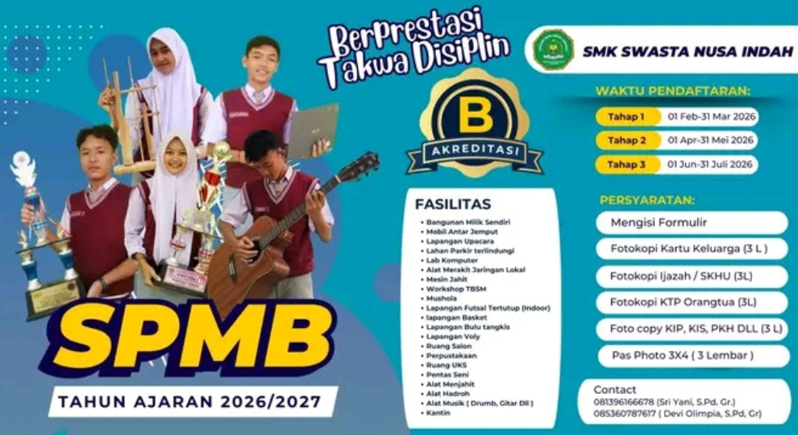
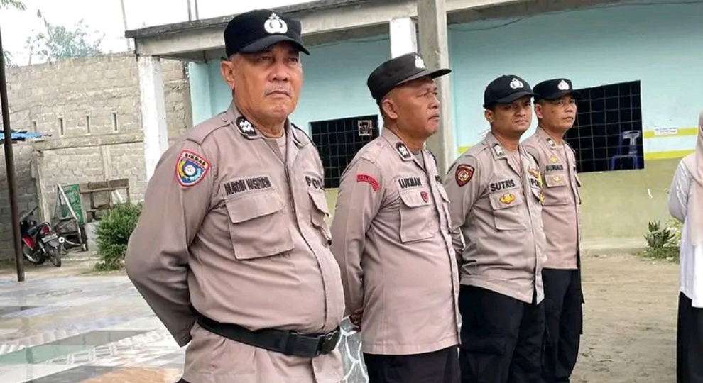
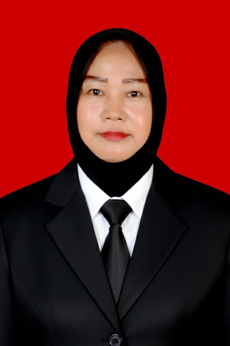
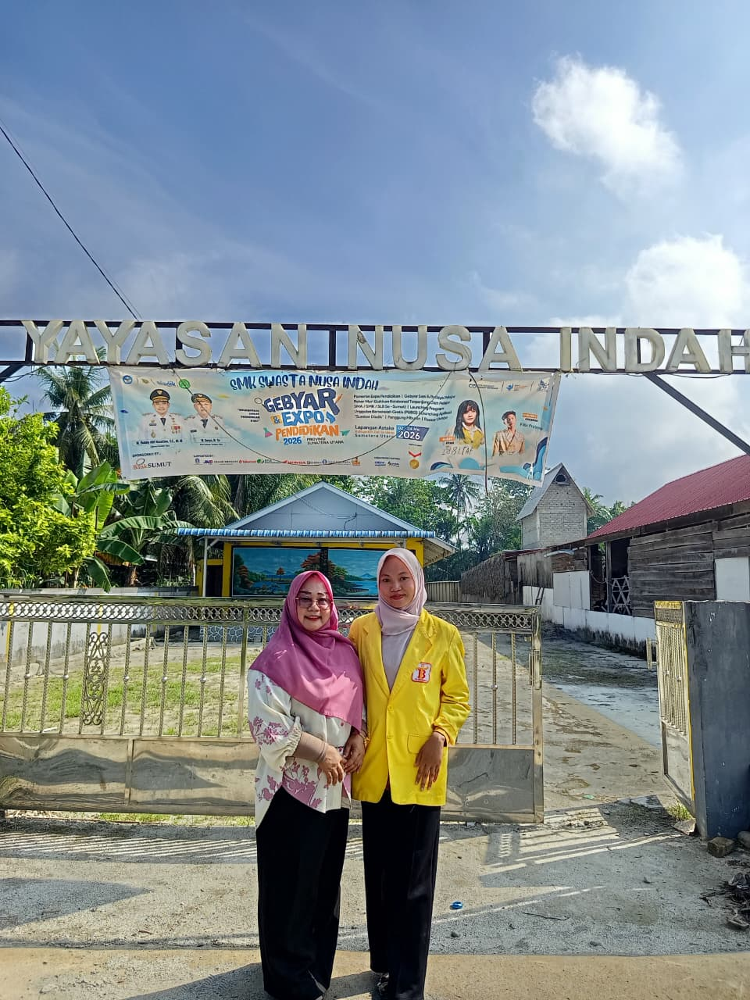
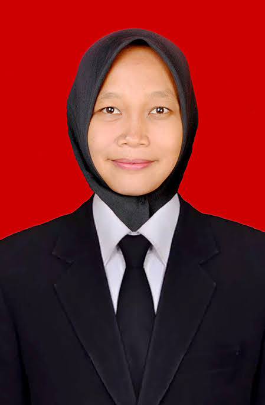
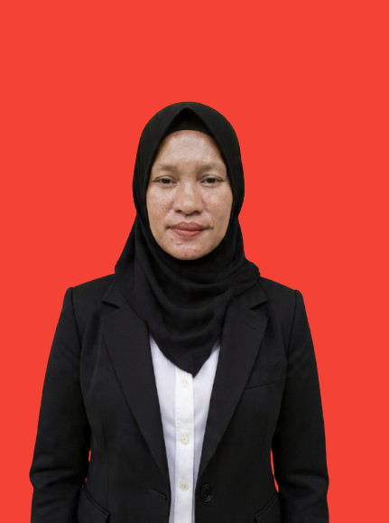
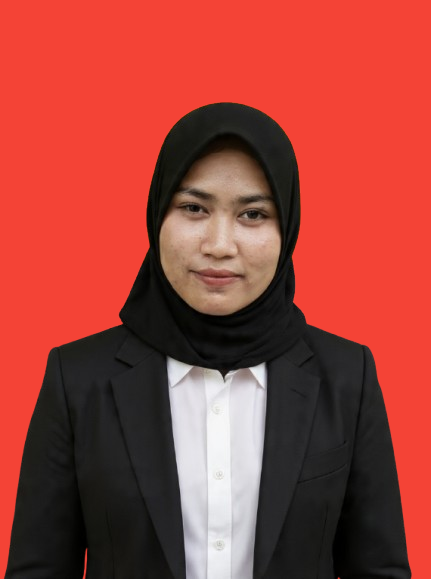
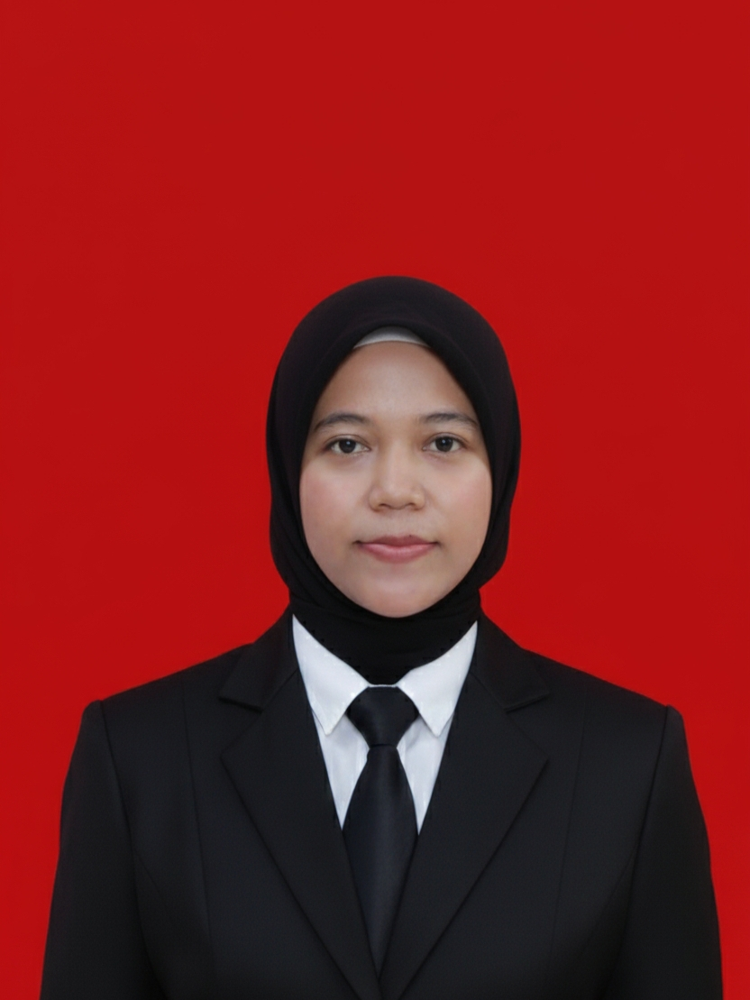
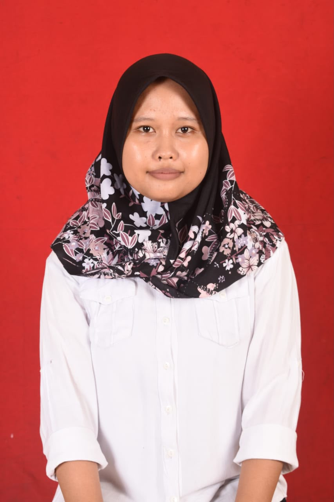

Kepala Sekolah SMK Nusa Indah
Assalamu’alaikum Warahmatullahi Wabarakatuh.
Salam sejahtera untuk kita semua, Puji syukur ke hadirat Tuhan Yang Maha Esa, atas rahmat dan karunia-Nya
SMK Nusa Indah kini telah hadir dengan website sekolah. Website ini kami hadirkan sebagai media informasi, komunikasi, dan transparansi antara sekolah, siswa, orang tua, alumni, serta masyarakat umum.
Melalui website ini, kami berharap seluruh kegiatan akademik, prestasi siswa, program keahlian, serta informasi pendaftaran dapat diakses dengan mudah, cepat, dan akurat.
Kami menyadari website ini masih perlu pengembangan. Oleh karena itu, kritik dan saran yang membangun sangat kami harapkan demi kemajuan sekolah ke depan. Akhir kata, semoga website ini bermanfaat dan dapat menjadi jembatan silaturahmi serta motivasi bagi seluruh warga SMK Nusa Indah untuk terus berprestasi dan mengharumkan nama sekolah.
Wassalamu’alaikum Warahmatullahi Wabarakatuh.
NURLIANA, S.Pdi,Gr
Kepala Sekolah
Terwujudnya SMK Nusa Indah sebagai lembaga Diklat yang mampu menyiapkan tamatan menjadi calon tenaga kerja yang trampil, produktif, profesional, dan mandiri berdasarkan kejuruanya masing-masing.



Manajemen Pendidikan

Guru Matematika

Bahasa Inggris

Pendidikan Pancasila & Kewarganegaraan

Sejarah Indonesia
Produktif RPL/TKJ

Desain Grafis, SKD
Teknik Sepeda Motor